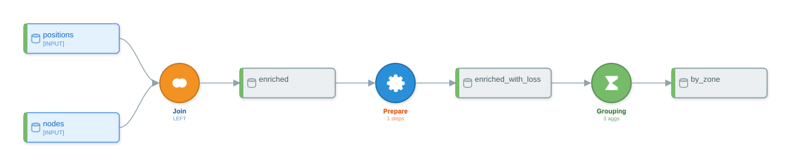
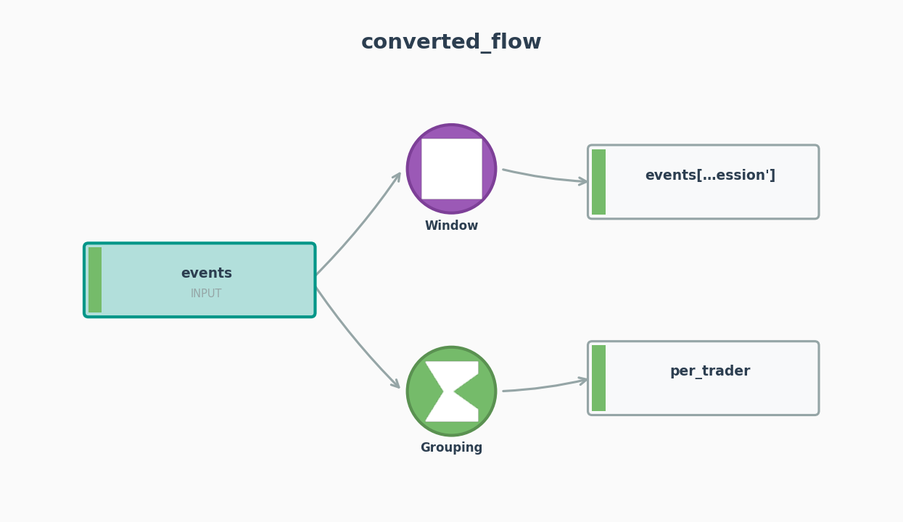

Worked Examples 4 — Power Hubs and Trade-Event Aggregation¶
What you'll learn¶
This chapter walks two front-office trading scripts end-to-end through convert() and inspects the resulting flows in full. The first joins PJM locational positions to a node-zone reference table, derives a per-position transmission-loss metric with a GREL formula, and aggregates by zone and delivery hour with a GROUPING recipe. The second processes a real-time trade-event stream from Endur and Allegro source systems, computes per-trader event counts with a COUNTD aggregation, and adds a session-bound rolling event count via a WINDOW recipe. Both examples surface gaps in the rule-based mapping table that a reader running py-iku against locational MtM and trade-capture pipelines will hit on day one.
A note on coverage gaps¶
Three known gaps in the rule-based path are exercised by this chapter:
FUZZY_JOINhas no pandas-mapping entry. Searchingpy2dataiku/mappings/pandas_mappings.pyforfuzzyreturns nothing;df.merge(...)always lands onRecipeType.JOINregardless of column-content fuzziness.SYNChas no pandas-mapping entry either. Adf.to_csv(...)is recorded as a write side-effect but never promoted to aSYNCrecipe. Constructing aSYNCrecipe requires the manual route shown later.- A
groupby(...).rolling(..., on=...)chain returns emptypartition_columnsandorder_columnson the rule-based path. The window-emission code inpy2dataiku/parser/ast_analyzer.py:441-503extracts the window size and aggregation column from the chain but does not populate partition or order keys;py2dataiku/generators/flow_generator.py:714-715then reads those parameters back as empty lists.
Each gap is called out where it surfaces. Both rule-based examples close the gap by editing the produced DataikuFlow directly using the public API.
Example 1 — PJM hub-locational MtM analysis¶
Schema¶
Out-of-running-example.
lmp_positions.csvcarries one row per locational position withposition_id,trader_id,trade_date,iso,node_id,node_name,zone,volume_mwh,position_type(LONG/SHORT),source_lmp($/MWh),dest_lmp($/MWh),delivery_date,hour_ending.node_to_zone.csvcarries one row per PJM pricing node withnode_id,node_name,zone,lat,lon,voltage_kv,region. Common PJM zones in the data:WESTERN HUB,AEP,DOM,AECO,ComEd.
Source¶
from py2dataiku import convert
source = """
import pandas as pd
positions = pd.read_csv("lmp_positions.csv")
nodes = pd.read_csv("node_to_zone.csv")
enriched = positions.merge(
nodes,
on="node_id",
how="left",
)
by_zone = enriched.groupby(["zone", "hour_ending"]).agg({
"volume_mwh": "sum",
"position_id": "count",
})
"""
flow = convert(source)
Initial flow shape¶
The rule-based analyzer produces two recipes:
The merge becomes a JOIN recipe with JoinType.LEFT and one join key on node_id. The groupby(...).agg({...}) form (a dictionary, not a named-tuple) becomes a GROUPING recipe with group_keys=['zone', 'hour_ending'] and two aggregations. Inspecting the JOIN node confirms the keys and join type:
from py2dataiku import RecipeType
join = next(r for r in flow.recipes if r.recipe_type == RecipeType.JOIN)
print(join.join_type.value) # 'LEFT'
for jk in join.join_keys:
print(jk.left_column, jk.right_column, jk.match_type)
# node_id node_id EXACT
The match type is EXACT. There is no fuzzy matching here even though front-office data frequently carries node-name variants ("AEP-DAYTON HUB" vs "AEP DAYTON"); see the gap note below.
FUZZY_JOIN: the routing gap¶
Trading desks running locational analysis often need fuzzy matches against a master node table — partial node-name matches across vendor feeds, ISO renamings, or upstream tickers. RecipeType.FUZZYJOIN exists in py-iku, but mappings/pandas_mappings.py carries no rule that promotes any pandas idiom to it (grep -i fuzzy py2dataiku/mappings/pandas_mappings.py returns no matches). The analyzer cannot infer fuzziness from the AST alone; the join is node_id-keyed in the source, and the analyzer treats it as exact. For a one-off conversion against a dirty node table, edit the produced recipe in place: join.recipe_type = RecipeType.FUZZYJOIN. The serializer respects the change. Chapter 12 walks through the plugin route for teams that want a sentinel marker (a comment, a wrapper function) to promote selected merges to FUZZY_JOIN.
Adding the transmission-loss GREL formula¶
The rule-based analyzer does not promote bare-assignment derived columns such as enriched["transmission_loss"] = (enriched["source_lmp"] - enriched["dest_lmp"]) * enriched["volume_mwh"] to a PREPARE recipe. The _handle_assign path in py2dataiku/parser/ast_analyzer.py:235-249 groups transformations by their target dataframe name, and a subscript target like enriched["transmission_loss"] is keyed under the literal string enriched['transmission_loss'] — not under enriched. The COLUMN_CREATE transformation is recorded but never paired with a READ_DATA or upstream source_dataframe, so flow_generator.py:77-100 drops the group on the floor. The fix is to construct the PREPARE recipe directly:
from py2dataiku import (
DataikuRecipe, RecipeType, ProcessorType, PrepareStep,
DataikuDataset, DatasetType, Aggregation,
)
grel = (
'(val("source_lmp") - val("dest_lmp")) * val("volume_mwh")'
)
loss_step = PrepareStep(
processor_type=ProcessorType.CREATE_COLUMN_WITH_GREL,
params={"column": "transmission_loss", "expression": grel},
)
prep = DataikuRecipe(
name="prepare_loss",
recipe_type=RecipeType.PREPARE,
inputs=["enriched"],
outputs=["enriched_with_loss"],
steps=[loss_step],
)
flow.recipes.insert(1, prep)
flow.add_dataset(DataikuDataset(
name="enriched_with_loss",
dataset_type=DatasetType.INTERMEDIATE,
))
grp = next(r for r in flow.recipes if r.recipe_type == RecipeType.GROUPING)
grp.inputs = ["enriched_with_loss"]
grp.aggregations.append(Aggregation(column="transmission_loss", function="AVG"))
The GREL string is a real DSS formula computing a per-position dollar value: spread between source and destination LMP multiplied by the position's volume. val("source_lmp") and val("dest_lmp") reference the position columns; val("volume_mwh") is the position size. The expression syntax is the standard formula language (see Dataiku docs: Formula language).
Inspecting every recipe's settings¶
After the manual edit, the recipe sequence is JOIN → PREPARE → GROUPING:
for r in flow.recipes:
print(f"{r.recipe_type.value:10s} {r.inputs} -> {r.outputs}")
# join ['positions', 'nodes'] -> ['enriched']
# prepare ['enriched'] -> ['enriched_with_loss']
# grouping ['enriched_with_loss'] -> ['by_zone']
The PREPARE recipe is one CreateColumnWithGREL step. The GROUPING aggregations now read:
The DAG is one connected component, which is what a reader expects from a linear enrichment-then-aggregate pipeline:
print(flow.graph.find_disconnected_subgraphs())
# [{'positions', 'nodes', 'recipe:join_1', 'enriched',
# 'recipe:prepare_loss', 'enriched_with_loss',
# 'recipe:grouping_2', 'by_zone'}]
A single set means a single connected component. find_disconnected_subgraphs() returns more than one set when a recipe is unreachable from any input — Chapter 10 covers that diagnostic. FlowGraph.get_path traces a directed path from input to output, useful for asserting lineage in CI:
print(flow.graph.get_path("positions", "by_zone"))
# ['positions', 'recipe:join_1', 'enriched',
# 'recipe:prepare_loss', 'enriched_with_loss',
# 'recipe:grouping_2', 'by_zone']
The path passes through the GREL-bearing PREPARE on its way from the position-tape input to the zonal MtM output.
Visualization: ASCII¶
flow.visualize(format="ascii") returns a vertical text-art DAG (the renderer uses framed boxes and the literal 📊 glyph for dataset nodes; the raw output is meant for terminal viewing rather than for embedding in prose). Reading top-to-bottom, the renderer prints positions and nodes as [INPUT] boxes feeding the ⋈ JOIN recipe (labelled LEFT), an intermediate enriched dataset, the ⚙ PREPARE recipe (1 steps), an intermediate enriched_with_loss dataset, the Σ GROUPING recipe (3 aggs), and a terminal by_zone dataset. The format is enough to confirm at a glance that the JOIN, PREPARE, and GROUPING are wired in series with no branching.
Visualization: Mermaid¶
flowchart TD
subgraph inputs[Input Datasets]
D0[(positions)]
D1[(nodes)]
end
D2[(enriched)]
D3[(by_zone)]
D4[(enriched_with_loss)]
R0{Join LEFT}
R1{Prepare 1 steps}
R2{Grouping 3 aggs}
D0 --> R0
D1 --> R0
R0 --> D2
D2 --> R1
R1 --> D4
D4 --> R2
R2 --> D3Visualization: SVG¶
flow.save("docs/textbook/assets/power-hubs-1.svg") writes the canonical SVG render. The same image is embedded below.

Example 2 — Real-time trade-event aggregation per trader¶
Schema¶
Out-of-running-example.
trade_events.csvcarries one row per trade-lifecycle event from a desk's order-and-execution stack:event_id,trade_id,trader_id,event_type(BOOKED/AMENDED/CANCELLED/MATCHED/SETTLED),event_at(timestamp),source_system(Endur/Allegro/Internal/Exchange),session_id,instrument,region. One trade typically appears on five to ten event rows over its lifecycle; one trader produces hundreds to thousands of events per session.
Source¶
from py2dataiku import convert
source = """
import pandas as pd
events = pd.read_csv("trade_events.csv")
per_trader = events.groupby("trader_id").agg({
"trade_id": "nunique",
"event_id": "count",
})
events["events_in_session"] = events["event_id"].rolling("1H").count()
"""
flow = convert(source)
The two assignments share an input. The rule-based analyzer recognises groupby(...).agg(dict) and series.rolling(...).count() as distinct operations and emits two recipes that both fan out from events:
GROUPING with COUNTD¶
trade_id: "nunique" becomes an aggregation of canonical type COUNTD (count distinct). AggregationFunction.NUNIQUE is a phantom alias that points at the same canonical COUNTD value, so emitted JSON imports cleanly into DSS regardless of which alias the source used. event_id: "count" becomes COUNT. The full grouping spec:
grp = next(r for r in flow.recipes if r.recipe_type.value == "grouping")
print(grp.group_keys)
# ['trader_id']
for a in grp.aggregations:
print(a.column, a.function)
# trade_id COUNTD
# event_id COUNT
The two reductions answer two distinct desk questions: trade_id COUNTD is the number of distinct trades a trader touched; event_id COUNT is the total event volume for that trader, including amendments, cancels, and settles. The first is a header-level metric; the second is a workload metric.
A separate event-type breakdown — one count per event type, useful for surfacing cancel-heavy or amend-heavy traders — must be added by hand. The agg(name=("col","func")) named-tuple form would express this in pandas, but the rule-based analyzer returns an empty aggregations list for that idiom; grp.aggregations after a named-tuple agg(...) call comes back as []. Use the dict form (.agg({"col":"func"})) for any group-by reduction the analyzer should pick up.
WINDOW with rolling time¶
The rolling assignment becomes a WINDOW recipe. The analyzer extracts the window size ("1H") and the aggregation column (event_id, COUNT), and records them in window_aggregations:
win = next(r for r in flow.recipes if r.recipe_type.value == "window")
print(win.window_aggregations)
# [{'column': 'event_id', 'type': 'COUNT', 'windowSize': '1H'}]
print(win.partition_columns, win.order_columns)
# [] []
The partition_columns and order_columns lists come back empty. The rule-based path does not extract partition and order from a chained groupby(...).rolling(..., on="event_at") invocation — py2dataiku/parser/ast_analyzer.py:441-503 only walks the rolling and aggregation methods; flow_generator.py:714-715 reads back what is not there. The LLM path (Chapter 7) recovers both fields. For the rule-based path, fill them in by hand if the downstream DSS export requires partition-bound rolling:
The output dataset name events['events_in_session'] carries the bracket syntax from the source AST — the analyzer does not normalise it. A clean rename improves both downstream readability and PlantUML rendering (see the visualization note below):
from py2dataiku import DataikuDataset, DatasetType
win.outputs = ["events_with_session_count"]
flow.add_dataset(DataikuDataset(
name="events_with_session_count",
dataset_type=DatasetType.INTERMEDIATE,
))
Deriving event_intensity: the silent-drop gap¶
A natural follow-up — events["event_intensity"] = events["events_in_session"] / events["session_duration_min"] — is dropped silently by the rule-based analyzer. The reason is the same one that broke the GREL derivation in Example 1: _handle_binop (in py2dataiku/parser/ast_analyzer.py:1770-1780) records a COLUMN_CREATE transformation, but its target_dataframe is events['event_intensity'] (the literal subscript), not events. The grouping logic at flow_generator.py:77 keys transformations by target_dataframe, which puts the binop in its own group with no upstream dataset — the FlowGenerator then drops the group because there is nothing to write a PREPARE recipe against. Adding an event_intensity step requires the same hand-construction:
intensity_step = PrepareStep(
processor_type=ProcessorType.CREATE_COLUMN_WITH_GREL,
params={
"column": "event_intensity",
"expression": 'val("events_in_session") / val("session_duration_min")',
},
)
intensity_prep = DataikuRecipe(
name="prepare_intensity",
recipe_type=RecipeType.PREPARE,
inputs=["events_with_session_count"],
outputs=["events_scored"],
steps=[intensity_step],
)
flow.recipes.append(intensity_prep)
flow.add_dataset(DataikuDataset(
name="events_scored",
dataset_type=DatasetType.INTERMEDIATE,
))
Inspecting the WINDOW settings and optimization notes¶
After the manual partition/order fix:
print(win.partition_columns, win.order_columns)
# ['trader_id'] ['event_at']
print(win.window_aggregations)
# [{'column': 'event_id', 'type': 'COUNT', 'windowSize': '1H'}]
flow.optimization_notes collects per-recipe-type counts from the base generator and is appended to during merging by the optimizer. After convert() returns:
The two PREPARE recipes added after the fact are absent from optimization_notes — the field records what the generator and optimizer saw at conversion time, not the post-edit shape. Append manual notes if downstream tooling reads the field for inventory:
Visualization: ASCII¶
flow.visualize(format="ascii") prints events as the single [INPUT] box with the Σ GROUPING (2 aggs) and ▦ WINDOW recipes both fanning out from it, then their respective intermediate datasets per_trader and events_with_session_count, and finally the ⚙ PREPARE (1 steps) feeding events_scored. The renderer uses the literal 📊 glyph for datasets and Σ / ▦ / ⚙ for the recipe types — useful in a terminal but not embedded here.
Visualization: PlantUML¶
@startuml
!theme plain
rectangle "events" <<input>> as events
rectangle "per_trader" <<intermediate>> as per_trader
rectangle "events_with_session_count" <<intermediate>> as events_with_session_count
rectangle "events_scored" <<intermediate>> as events_scored
card "Grouping" <<grouping>> as recipe_0
card "Window" <<window>> as recipe_1
card "Prepare" <<prepare>> as recipe_2
events --> recipe_0
recipe_0 --> per_trader
events --> recipe_1
recipe_1 --> events_with_session_count
events_with_session_count --> recipe_2
recipe_2 --> events_scored
@enduml
The aliases here have been chosen to be bracketless. The native flow.visualize(format="plantuml") output retains the bracket form verbatim when the rolling output is left at its analyzer-emitted name (as events['events_in_session']), which is invalid PlantUML — square brackets and quotes are reserved characters in alias positions. The renamed output (events_with_session_count) avoids the issue. Tracked as a visualizer quirk; the SVG, PNG, and ASCII outputs are unaffected.
Visualization: PNG¶
flow.save("docs/textbook/assets/power-hubs-2.png") writes the matplotlib-rendered PNG. The same image is embedded below.

What both examples illustrate¶
The rule-based analyzer is precise about idioms it knows and silent about idioms it does not. df.merge, df.groupby(...).agg(dict), and series.rolling(...).count() all map cleanly. df.merge with fuzzy-key intent, df["new"] = expression (binop or scalar formula), df.groupby(...).agg(name=(...)) (the named-tuple form), and df.to_csv(...) either route to the wrong recipe type, drop the operation on the floor, or both. Closing those gaps is the job of one of three escape hatches:
- The LLM path (Chapter 7) recovers many of these by reading the intent of the code rather than the AST shape; in particular it recovers
partition_columnsandorder_columnsfor the chainedgroupby(...).rolling(...)form. - A registered plugin (Chapter 12) extends
pandas_mappings.pywith team-specific rules — for instance, promoting any merge tagged with a sentinel comment toFUZZY_JOIN. - Direct construction on the produced
DataikuFlow, as both examples here demonstrate.
The third option is the lightest weight when a single conversion needs a recipe type or processor the analyzer cannot infer. The DataikuFlow, DataikuRecipe, and PrepareStep constructors are public API and round-trip through flow.to_dict() / from_dict(), so a manually augmented flow serialises identically to a fully analyzer-generated one.
Further reading¶
- Glossary — JOIN, GROUPING, WINDOW, GREL, aggregation, partition, dataset, recipe, processor, DSS.
- Cheatsheet — the pandas-to-DSS lookup table for the merge, groupby, and rolling idioms used here.
- Chapter 6: Recipe types tour — the full inventory of non-PREPARE recipe types, including
FUZZY_JOINandSYNCwhich this chapter constructs by hand. - Recipes API reference —
DataikuRecipe,DataikuFlow,PrepareStep,Aggregation. - Notebook 03: advanced recipes — the same JOIN-PREPARE-GROUPING and rolling-WINDOW shapes against a different schema.
- Dataiku docs: Formula language — GREL reference cited by the transmission-loss derivation.
What's next¶
The next worked-examples chapter pairs prediction-scoring flows with the LLM analyzer path; readers staying on the rule-based path can return to Chapter 9 for advanced detection patterns.